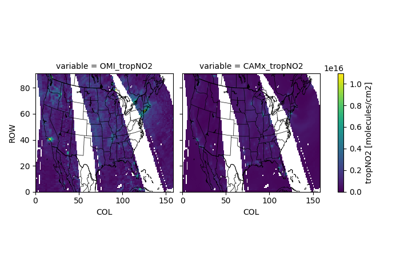

Satellite Comparison
¶
TropOMI NO2
OMI NO2

Simple OMI
Simple OMI
Pair CAMx with TropOMI NO2
Pair CAMx with TropOMI NO2
SESARM Training
Navigation
Table of Contents
SESARM Training Speaker Notes
Examples
Get System Ready
Gridded Emission Examples
Point Source Emission Examples
Rerun CAMx
Model Performance Evaluation
Satellite Comparison
Making CAMx Maps
Related Topics
Documentation overview
Examples
Previous:
Compare Model to Daily MDA8 Observations
Next:
Simple OMI